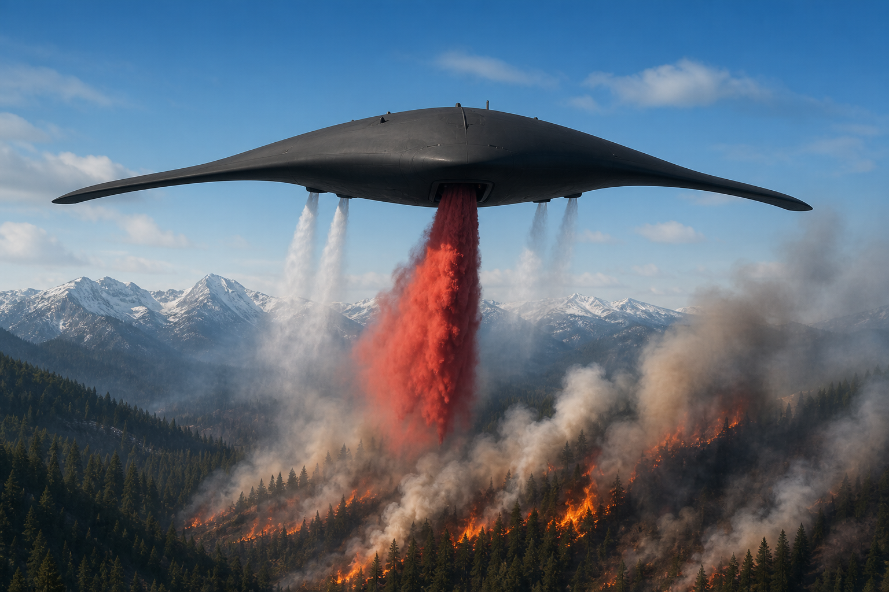

Platform at a Glance
TITAN-X is a free-flight stratospheric aerostat that operates in the altitude band between conventional aircraft and satellites. It carries a 20,000 lb modular payload, stays aloft indefinitely on helium buoyancy and solar power, and can be reconfigured for different missions by exchanging gondolas and underbelly modules.
| Parameter | Value | Notes |
|---|---|---|
| Size | 480 ft × 200 ft | Swept manta planform |
| Net payload | 20,000 lbs | ≈ school-bus weight |
| Altitude range | 500 – 130,000 ft | Tree-top to lower stratosphere |
| Endurance | Indefinite | Solar + buoyancy |
| Ops carbon | Near-zero | No combustion for loiter |
| Unit CAPEX | $13 million | Fleet volume; 12 ≈ $156M |
| Annual OPEX | $2.4 million | Break-even ~$200K/mo |
Core Advantages
- Indefinite endurance — solar power is sufficient for continuous station-keeping and operations.
- High payload — 20,000 lbs supports substantial sensors, supplies, cabins, or drone loads.
- Fully modular — one hull family serves many missions by changing modules.
- Near-zero operational carbon for persistent missions.
- Rockoon capability — loft rockets to ~100,000 ft for major propellant savings, then recover the platform.
- Dual-use architecture — civil, commercial, and defense requirements can share the same platform and cost base.

Regional Deployment Concept
The preferred operational model is pre-positioned regional coverage rather than centralized surge response.
1. Major Cities and High-Value Regions
Each major metropolitan area or high-risk region is assigned one TITAN-X (or a small pair). These units remain loaded with modular response packages and can be on station in hours. They function as persistent nodes for disaster response, communications restoration, wide-area observation, and logistics support.
2. California Firefighting Concentration
California is a natural early focus because of the scale and frequency of wildfire risk. A dedicated set of units would be configured primarily for firefighting support:
- Fire-behavior, thermal, and smoke-plume sensors
- Retardant or water delivery modules
- Incident command and communications packages
- Decision-support tools for incident commanders
These units remain modular and can shift to other missions in lower-risk periods, preserving utilization.
3. Smaller Complementary Platforms
Smaller aerostats or derivative platforms cover secondary roles that do not require the full 20,000 lb capacity: local observation, communications relay, weather and scientific sensing, and lower-cost regional coverage. Full-size TITAN-X units remain the primary regional nodes.
Deployment logic. Pre-positioning converts response time from days into hours. Civil and commercial utilization helps cover the cost of keeping assets available year-round. The same modular hull can shift between firefighting, disaster, infrastructure, and other configurations without separate fleets.
Key Mission Areas
Economics Snapshot
Capital is staged: pathfinder validation → first full-scale hull → initial operational units → fleet scale-up. Civil and commercial utilization is intended to help underwrite the cost of maintaining persistent regional coverage.
| Item | Value |
|---|---|
| Unit CAPEX (volume) | $13.0 million |
| 12-unit fleet CAPEX | $156 million |
| Annual OPEX per unit | $2.4 million |
| Target break-even | ~$200,000 / month per unit |
| Planning 10-year fleet ROI | 17.8 : 1 |
Summary Position
TITAN-X provides persistent, high-payload capability in the altitude band between aircraft and satellites. The regional deployment model — one (or two) full-size units near major cities, a concentrated firefighting layer in California, and smaller complementary platforms — turns the platform into practical infrastructure rather than a surge-only asset.
The same modular architecture supports disaster response, infrastructure protection, public safety, scientific observation, rockoon launch, and selected defense options while sharing a common cost base.
Bottom line. Indefinite endurance. 20,000 lb modular payload. Near-zero operational carbon for persistent missions. Pre-positioned regional coverage with a California firefighting emphasis. Dual-use economics that allow civil and defense needs to share the same platforms.